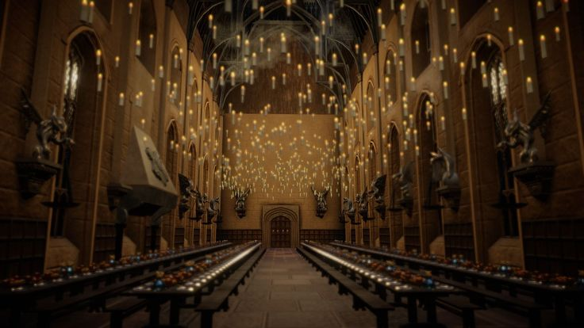

📰 September 1, 2026

Hundreds of excited young witches and wizards arrived at Hogwarts School of Witchcraft and Wizardry today aboard the famous Hogwarts Express. First-year students crossed the Black Lake by enchanted boats before entering the magnificent Great Hall for the annual Sorting Ceremony.
The enchanted ceiling shimmered with thousands of stars while the Sorting Hat carefully placed every student into Gryffindor, Hufflepuff, Ravenclaw, or Slytherin. Cheers echoed across the hall as each new witch and wizard discovered their Hogwarts home.
Professor Minerva McGonagall officially welcomed the newest class and reminded students that courage, loyalty, wisdom, and ambition remain the core values of Hogwarts. Following the ceremony, students enjoyed a grand feast prepared by the house-elves before heading to their common rooms.
As another magical school year begins, excitement fills every corridor of the ancient castle. From challenging classes and thrilling Quidditch matches to unforgettable adventures, Hogwarts once again opens its doors to a new generation of witches and wizards.
← Back to Today's Edition